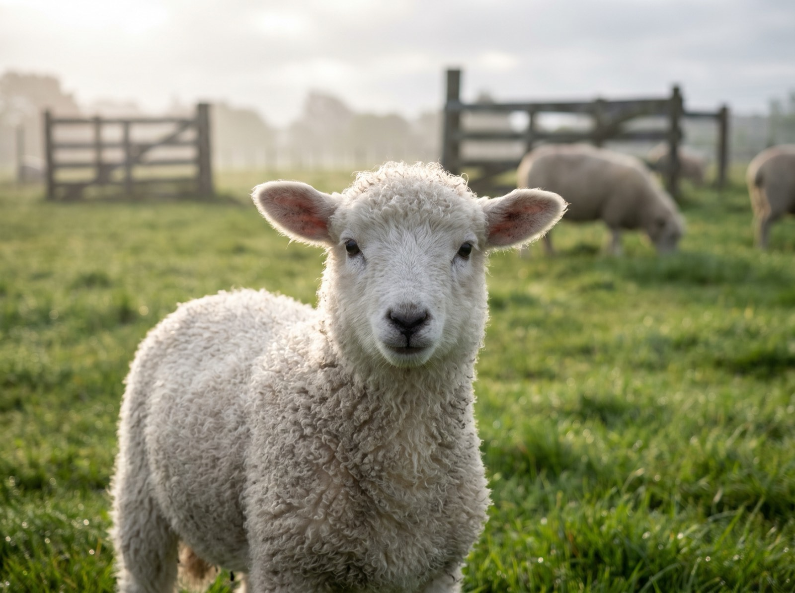
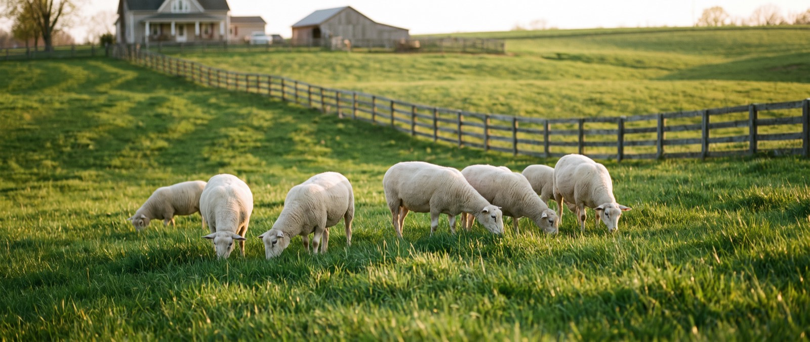
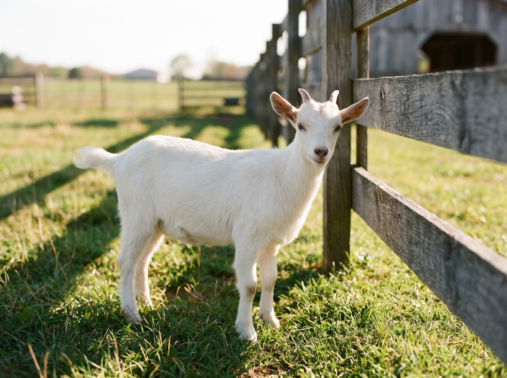
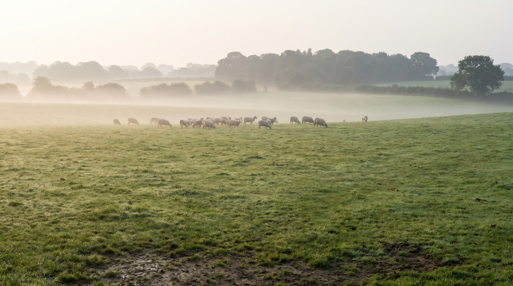
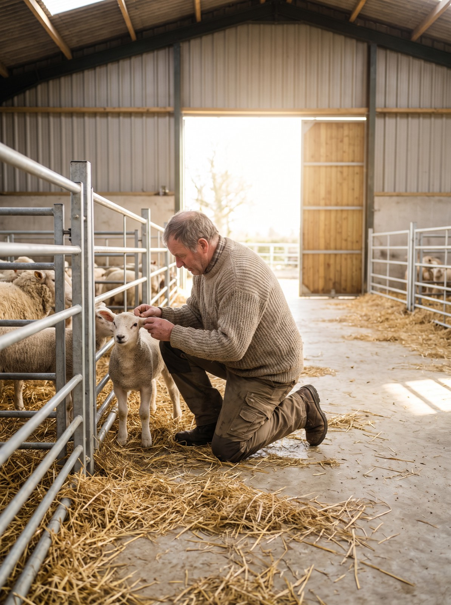
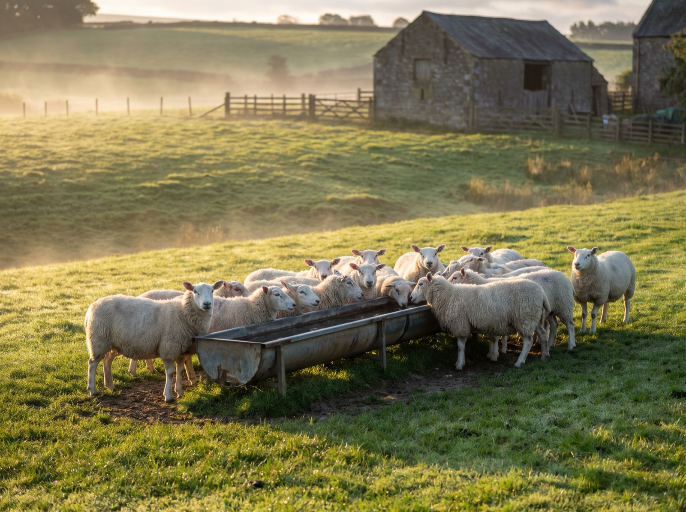

Доступен
Мы продаём живых животных — каждое с номером, весом, возрастом и ценой. Вы выбираете конкретное животное, мы бронируем его за вами и передаём вместе с документами.
Цена зафиксирована за конкретное животное. Забронированные и проданные лоты остаются в списке — так вы видите, сколько у нас на ферме.

Доступен
Доступен
Забронирован
Доступен
ДоступенЖивотные снимаются с продажи, когда их покупают или когда ветслужба даёт отвод. Базовая цена за килограмм меняется три раза в год — весной, летом и осенью–зимой, но цена конкретного животного фиксируется в момент брони и не меняется.
Средний срок от рождения до готовности к продаже — 7–8 месяцев. За это время животное ест траву на пастбище и зерно без ГМО, и мы не торопим этот процесс ради веса.
Ягнята и козлята появляются на пастбище в марте–мае. Первые недели — молоко матери, приучаем к выпасу.
Июнь–август — свободный выпас 12 часов в сутки. Свежая трава, движение, никаких кормовых добавок.
Сентябрь–октябрь — зерно собственного поля: ячмень, овёс, горох. Без ГМО и без гормонов роста.
Животных взвешиваем, ставим на учёт и маркируем. Дальше — ветеринарный осмотр и можно забирать.
Каждое животное получает номер, ушную метку и бирку, взвешивается и фотографируется. На карточке — порода, возраст, вес, условия откорма и фиксированная цена.
Если нужен барашек под конкретный вес — скажите, подберём ближайший лот или поставим животное в лист ожидания и сообщим, когда подходящее появится.
Цена за килограмм зависит от корма: весной и летом в рационе больше свежей травы, осенью — зерно. Мы считаем от базовой цены и получаем цену конкретного животного.
| Животное | Типичный вес | Цена, ₽/кг | Ориентир за животное |
|---|
Итоговая цена считается по фактическому весу конкретного животного и фиксируется в карточке лота. Если животное весит больше или меньше — цена не пересчитывается задним числом.
Смотрите фото, видео, вес, историю и ветеринарный статус конкретного лота в каталоге.
Депозит фиксирует животное за вами на 24 часа. Если не оплатили — лот возвращается в продажу.
Ссылка на оплату приходит в Telegram, MAX или на почту: СБП в приложении любого банка или карта.
Самовывоз с фермы или доставка. Остаток оплачиваете при передаче, документы получаете сразу.
Всеволожский район, 40 км от города. Приезжайте смотреть животных.
Взвешиваем при вас перед передачей. Цена зафиксирована по карточке лота.
Ушная метка и учёт в «Хорриоте», ветеринарный осмотр, чек 54‑ФЗ.
Забрать на ферме или доставить своим транспортом / нашим, в пределах 30 км.
Да — это и есть наша модель. У каждого животного номер, фото, видео, вес и фиксированная цена. Если подходящего веса сейчас нет, оставьте заявку: сообщим, когда появится.
Ушная метка и запись в системе «Хорриот» — это обязательный учёт. Дополнительно оформляем ветеринарные сопроводительные документы, если они нужны именно вам: при продаже юридическому лицу или при перевозке. Всё готовим заранее и выдаём вместе с животным.
Да, и мы это советуем. Приезжайте на ферму во Всеволожском районе или попросите видео с боков и с весами — пришлём в Telegram или MAX.
Обычно животное готово к передаче в течение 2–3 дней после брони. Если нужен конкретный день, договариваемся заранее при оформлении.
Депозит возвращается полностью, если животное не передано в согласованный срок. Если передумал раньше — просто не оплачивайте депозит, броня снимется через 24 часа.
Создайте аккаунт одним из трёх способов. Он привязывает заказы к вам: видно статусы, оплату, документы по животному и можно повторить прошлый заказ в один тап.
Вход по email — код из письма. Вход через Telegram и MAX — без пароля, по данным мессенджера. Можно привязать все три способа к одному аккаунту.
Все вопросы — в мессенджере. Там же мы присылаем ссылку на оплату, фото и видео животного перед передачей и документы. Отвечаем ежедневно с 8:00 до 21:00, обычно за 10 минут.